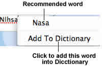
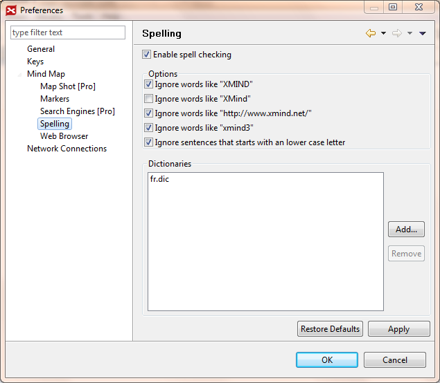

A spell checker is automatically invoked as users type text into XMind topics. The misspelled words are marked with a red underline. Right-click on the word, you can replace it with the suggested words, or add this word to your dictionary.

You can change more settings via following steps:
- Choose 'Window > Preferences' on the menu.
- Select 'Spelling'.
- You can see following check boxes:
- Enable spell checking
- Ignore words like "XMIND"
- Ignore words like "XMind"
- Ignore words like "http://www.XMind.net/"
- Ignore words like "xmind3"
- Ignore sentences that starts with an lower case letter
- Adding your own dictionary file(*.dict) into XMind.
XMind just has the English dictionary in the release package. You can add your own Dictionary with below steps:
- Go to XMind Spelling Preferences Page
- Click "Add" button
- Select the dictionary files from your computer(.txt, .dic, or .dict)

You may also be interested in...